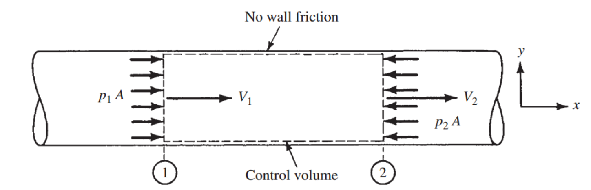
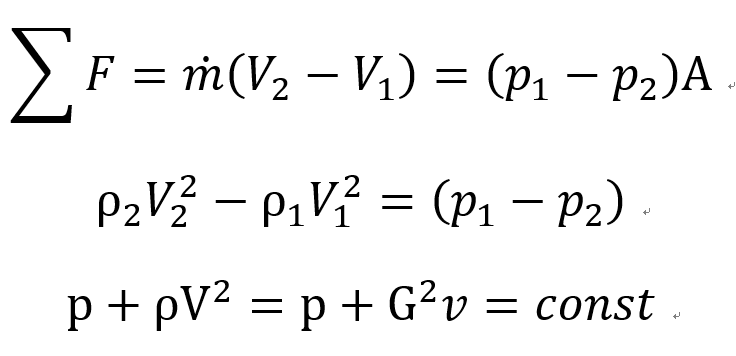
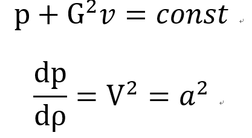
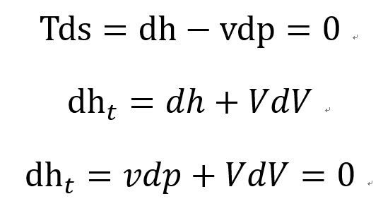
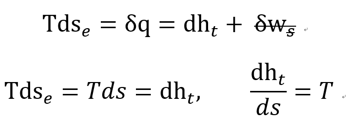
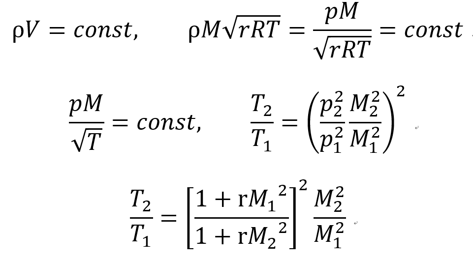
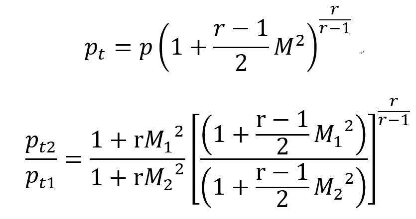
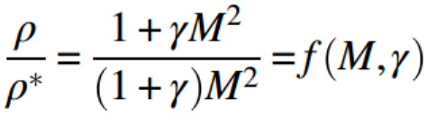

[Gas Dynamics] Ch 10 Rayleigh Flow - part 1
Gas Dynamics에서 우리는 Compressible flow
밀도 변화가 있는 경우 유체의 흐름을 분석하고있다.
그리고
Compressible Flow에서 가장 중요한 3가지 Factor
에 대해서
Ch5에서 언급하였다
1. Area change
2. Friction
3. Heat transfer
ch 5 - Area change
ch 9 - friction Fanno flow
에 대해서 이미 앞에 두가지 요소는 다루었다.
이제는 마지막 3번째 Heat transfer이 있는 경우의 유동
Rayliegh Flow를 해석해보자
Assumptions
- Steady 1-D process
- No shaft work
- Neglect potential
- No friction
- Area constant

Continuity Eq.
ρV = G = 일정
Momentum Eq.

즉, p와 v는 G가 일정할때, 기울기가 음수인 직선함수
이제 Fanno line처럼 G가 일정할때 그래프를 Plot해보자
![[Gas Dynamics] Ch 10 Rayleigh Flow - part 1](./images/img-003.png)
Temperature line(dT = 0)
Ideal gas 식을 통해서 T가 일정할때, p와 v는 반비례함수.
![[Gas Dynamics] Ch 10 Rayleigh Flow - part 1](./images/img-004.png)
하지만, 이 그래프만 으로는 Flow 방향을 알지 못한다.
따라서 엔트로피가 증가하는 방향을 찾으러
s constant line을 그려보자
Entropy line(ds = 0)
Ideal gas 에서 Isentropic process 일때,
![[Gas Dynamics] Ch 10 Rayleigh Flow - part 1](./images/img-005.png)
위 식을 미분해주면, 기울기를 알 수 있어 더 자세하게 Plot가능.
![[Gas Dynamics] Ch 10 Rayleigh Flow - part 1](./images/img-006.png)
이제 Entropy line도 plot해보면
![[Gas Dynamics] Ch 10 Rayleigh Flow - part 1](./images/img-007.png)
위 그래프를 보고 주목할 만한 사실은 2가지.
1. Flow는 1->2->3(Max T) -> 4(Max s)
에서 더이상 v가 커지지 않는다는 말.
2.T max 와 S max 차이
이를 해석하기 위해서는 엔트로피 개념을 한번 다시 짚고 가자.
[Ch2]
에서 언급하였지만, 엔트로피는
Se: Reversible,
Si: Irreversilbe
두가지로 나눌 수 있다.
하지만 Assumption에서 No friction 이라고 했으므로 Si = 0
총 엔트로피 = Se term 만 존재한다.
그런데 이 reversible 엔트로피는 heat trasnfer양을 의미한다.
따라서 Heat이 들어오면 엔트로피는 증가한다는 의미이다.
![[Gas Dynamics] Ch 10 Rayleigh Flow - part 1](./images/img-008.png)
However,
그래프를 다시 봐보면
State 3 -> 4 에서 엔트로피는 증가한다.
따라서 열이 계속 C.V에 들어온다는 의미이다.
그럼에도 불구하고 온도는 감소함을 알 수 있다.
이제 h-s그래프로 다시 한번 살펴보자
![[Gas Dynamics] Ch 10 Rayleigh Flow - part 1](./images/img-009.png)
Fanno line과 마찬가지로
State 4 일때 ds =0, s max로 Limiting point이다.
그때,
위에서 구한 G=
ρV = 일정할때,
Momentum Eq을 미분해주면

dp/d
ρ 는 s 일정할때 a^2 이므로
우리는 Rayliegh flow Limiting point도 Ma = 1임을 알 수 있다.
뿐만아니라,
Continuity Eq을 방금 구한 식에 대입하면.
![[Gas Dynamics] Ch 10 Rayleigh Flow - part 1](./images/img-011.png)
그리고 Energy eq에 위의 dp를 대입하면

Limiting point에서 Stagnatio Enthalpy는 max임을 알 수 있다.
게다가 h-s graph, Stagnation Enthalpy 기울기는 온도임을 알 수 있다.

이제 State 1 -> State2 일때, Property비율들을 모두
M,r로 똑같이 표현해보자
why? 기준점잡고, Table만들려고
압력비율 by Momentum Eq.
![[Gas Dynamics] Ch 10 Rayleigh Flow - part 1](./images/img-014.png)
온도비율 by Continuity Eq.

Stagnation Temperature 비율
by static-stagnation 식 ch3
![[Gas Dynamics] Ch 10 Rayleigh Flow - part 1](./images/img-016.png)
Stagnation pressure 비율
by static-stagnation 식 ch3

이렇게 식을 어렵게 세운 이유가 뭐다?? 기준점을 잡고, Table에 plot하려고
이제 기준점을 잡아보자
Fanno 랑 똑같이,
기준점은 Limiting point =
* reference point for Rayleigh flow
이때, Ma = 1, ds =0, dht = 0 , s,ht 둘다 max
![[Gas Dynamics] Ch 10 Rayleigh Flow - part 1](./images/img-018.png)
따라서 위에 구해준 식들에다가
State 1: M1 -> M
State 2: M2 -> M =1 을 대입해주면
![[Gas Dynamics] Ch 10 Rayleigh Flow - part 1](./images/img-019.png)
![[Gas Dynamics] Ch 10 Rayleigh Flow - part 1](./images/img-020.png)

![[Gas Dynamics] Ch 10 Rayleigh Flow - part 1](./images/img-022.png)
M에 따른 위 값들을 전부 Rayleigh Table에 Plot해 놓았다.
외우면 바보다.
State1 -> State2 에서
우리의 관심사중 하나는 들어온 총 열량 일것,
![[Gas Dynamics] Ch 10 Rayleigh Flow - part 1](./images/img-023.png)
따라서, Stagnation Enthalpy 변화량을 통해서 알 수 있다.
마지막으로
예시문제 하나를 보면서 감을 잡아보자.
![[Gas Dynamics] Ch 10 Rayleigh Flow - part 1](./images/img-024.png)
![[Gas Dynamics] Ch 10 Rayleigh Flow - part 1](./images/img-025.jpg)